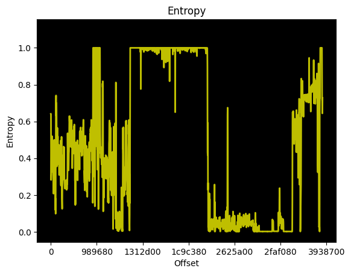

[+] Final aggregator
[+] Tested Firmware vendor: Ricoh
[+] Tested Firmware version: 121
[+] Tested Firmware from device: GRIIIx
[+] Tested firmware: /home/harry/Development/reversing/gr3x-fw-hack/assets/fwdc243b-v121/unpackedFW
[+] EMBA start command: ./emba -a ARM -l /home/harry/Development/reversing/gr3x-fw-hack/analysis/emba/default-scan-unpacked-fw -f /home/harry/Development/reversing/gr3x-fw-hack/assets/fwdc243b-v121/unpackedFW -X 121 -Z GRIIIx -Y Ricoh -p ./scan-profiles/default-scan.emba
[+] Detected architecture and endianness (verified): ARM / EL
[+] Operating system detected (verified): Linux / v4.4.15
[+] 437 files and 161 directories detected.
[+] Entropy analysis of binary firmware is: 6.529005 bits per byte.
[+] Entropy analysis of binary firmware is available: /logs/firmware_entropy.png
[+] Found 6 issues in 8 shell scripts.
[+] Found 25 successful emulated processes (user mode emulation).
[+] Found the following configuration issues:
Found 6 password related details via STACS.
Found 8 kernel modules with 0 licensing issues.
Found 81 security related kernel settings for review.
[+] Found 76 (66%) binaries without enabled RELRO in 115 binaries.
[+] Found 9 (8%) binaries without enabled NX in 115 binaries.
[+] Found 36 (31%) binaries without enabled PIE in 115 binaries.
[+] Found 107 (93%) stripped binaries without symbols in 115 binaries.
[+] Found 267 usages of strcpy in 115 binaries.
[+] STRCPY - top 10 results:
39 : busybox.nosuid : common linux file: yes | No RELRO | Canary | NX enabled | No Symbols | No Networking |
23 : systemd : common linux file: yes | RELRO | Canary | NX enabled | No Symbols | No Networking |
15 : systemctl : common linux file: yes | RELRO | Canary | NX enabled | No Symbols | No Networking |
14 : loginctl : common linux file: yes | RELRO | Canary | NX enabled | No Symbols | No Networking |
14 : libnsl-2.24.so : common linux file: no | RELRO | Canary | NX enabled | No Symbols | No Networking |
14 : libc-2.24.so : common linux file: no | RELRO | Canary | NX enabled | No Symbols | No Networking |
14 : journalctl : common linux file: yes | RELRO | Canary | NX enabled | No Symbols | No Networking |
14 : bcmdhd.ko : common linux file: no | No RELRO | Canary | NX disabled | Symbols | No Networking |
10 : udevadm : common linux file: yes | RELRO | Canary | NX enabled | No Symbols | No Networking |
9 : systemd-udevd : common linux file: yes | RELRO | Canary | NX enabled | No Symbols | No Networking |
[+] SYSTEM - top 10 results:
3 : busybox.nosuid : common linux file: yes | No RELRO | Canary | NX enabled | No Symbols | No Networking |
2 : kmod : common linux file: yes | No RELRO | Canary | NX enabled | No Symbols | No Networking |
1 : vipw.shadow : common linux file: no | No RELRO | Canary | NX enabled | No Symbols | No Networking |
1 : sysmgrd : common linux file: no | No RELRO | Canary | NX enabled | No Symbols | No Networking |
1 : libkmod.so.2.3. : common linux file: no | No RELRO | Canary | NX enabled | No Symbols | No Networking |
1 : bled : common linux file: no | No RELRO | Canary | NX disabled | No Symbols | No Networking |
0 : wl : common linux file: no | No RELRO | Canary | NX enabled | No Symbols | Networking un |
0 : v4l_id : common linux file: yes | RELRO | Canary | NX enabled | No Symbols | No Networking |
0 : usbd : common linux file: no | No RELRO | Canary | NX enabled | No Symbols | Networking un |
0 : usb_f_mtp.ko : common linux file: no | No RELRO | Canary | NX disabled | Symbols | Networking un |
[*] Identified the following software inventory, vulnerabilities and exploits:
[+] Found version details: sed : 4.0 : CVEs: 0 : Exploits: 0 : Source: STAT
[+] Found version details: e2fsprogs : 1.43 : CVEs: 2 : Exploits: 1 : Source: STAT/UEMU
[+] Found version details: kmod : 23 : CVEs: 0 : Exploits: 0 : Source: STAT/UEMU
[+] Found version details: dbus : 1.10.10 : CVEs: 2 : Exploits: 2 : Source: UEMU
[+] Found version details: busybox : 1.24.1 : CVEs: 17 : Exploits: 9 : Source: STAT/UEMU
[+] Found version details: expat : 2.2.0 : CVEs: 21 : Exploits: 17 : Source: STAT
[+] Found version details: hostapd : 2.6 : CVEs: 23 : Exploits: 12 : Source: STAT/UEMU
[+] Found version details: openssl : 1.0.2j : CVEs: 32 : Exploits: 32 : Source: STAT
[+] Found version details: glibc : 2.24 : CVEs: 36 : Exploits: 32 : Source: STAT/UEMU
[+] Found version details: udhcp : 1.24.1 : CVEs: 0 : Exploits: 0 : Source: STAT
[+] Found version details: util-linux : 2.28.1 : CVEs: 3 : Exploits: 2 : Source: STAT/UEMU
[+] Found version details: systemd : 230 : CVEs: 24 : Exploits: 22 : Source: STAT/UEMU
[+] Found version details: zlib : 1.2.8 : CVEs: 6 : Exploits: 6 : Source: STAT
[+] Found version details: kernel : 4.4.15 : CVEs: 1107 : Exploits: 272 : Source: STAT
[+] Identified 14 software components with version details.
[+] Identified 1273 CVE entries.
Identified 497 High rated CVE entries / Exploits: 210
Identified 733 Medium rated CVE entries / Exploits: 175
Identified 43 Low rated CVE entries /Exploits: 14
399 possible exploits available (9 Metasploit modules).
Remote exploits: 0 / Local exploits: 16 / DoS exploits: 4 / Github PoCs: 360 / Known exploited vulnerabilities: 2 / Verified Exploits: 0